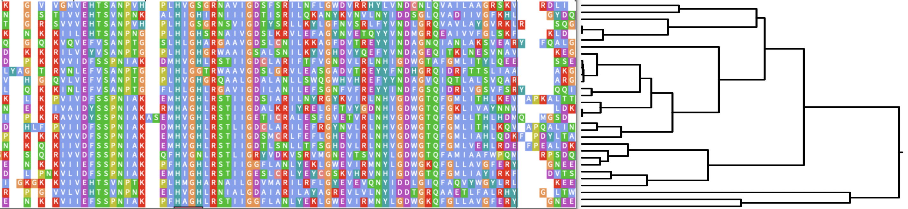
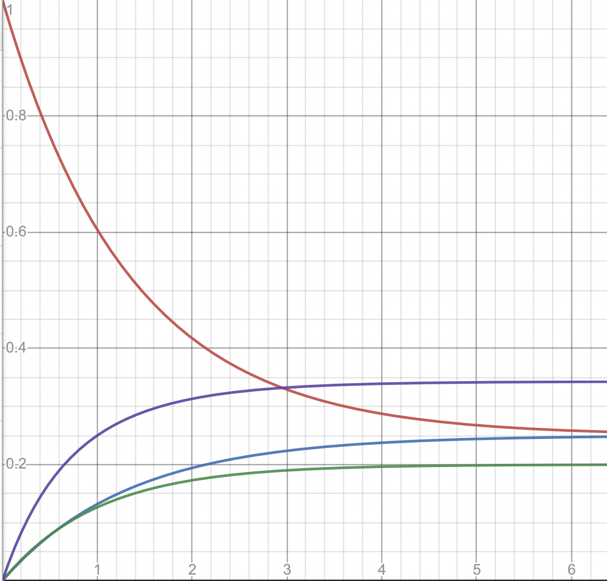
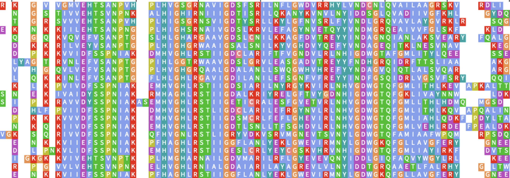
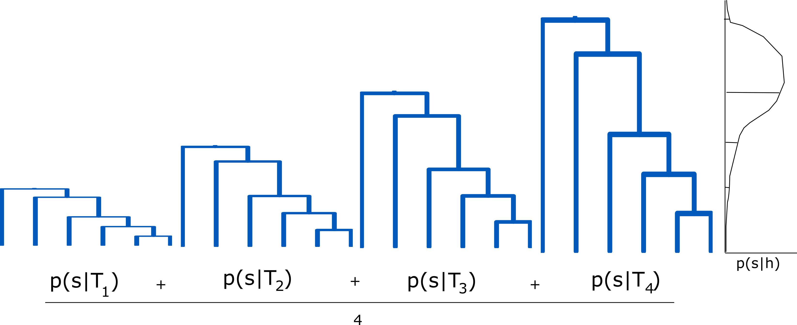
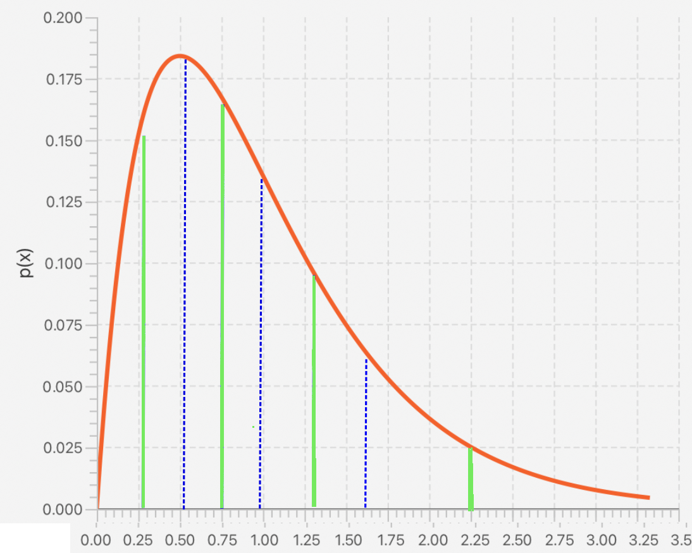
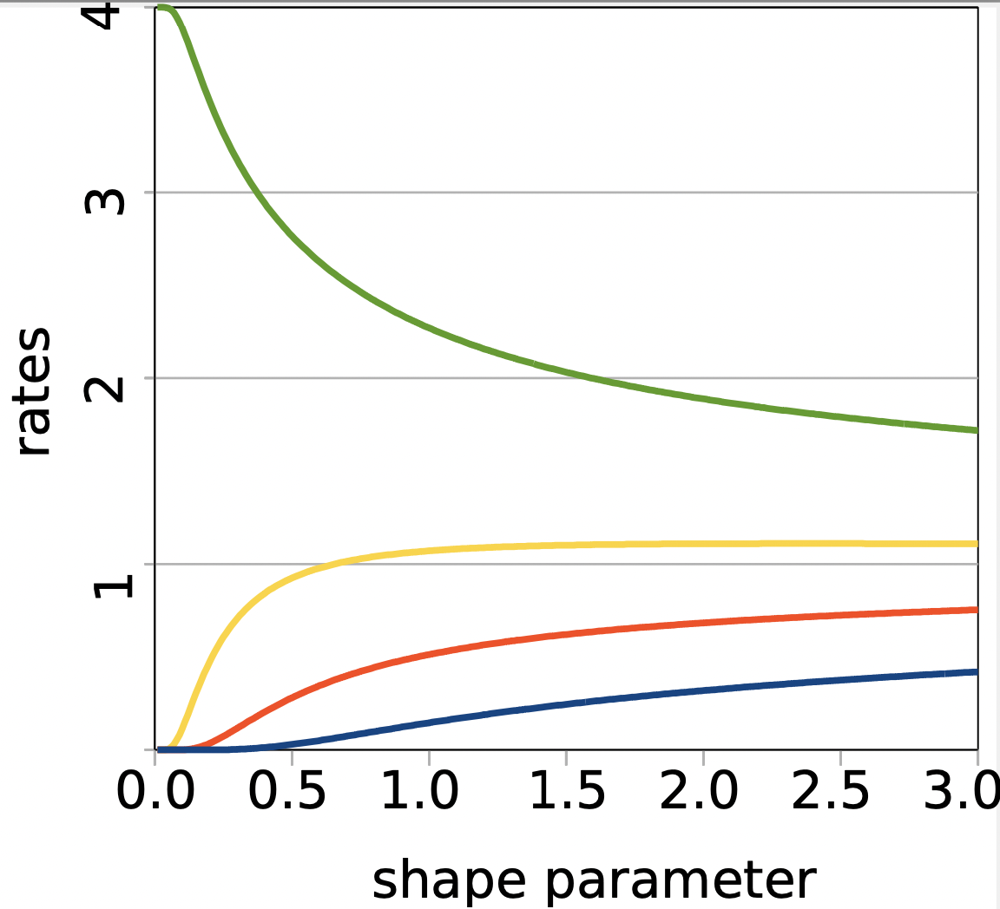
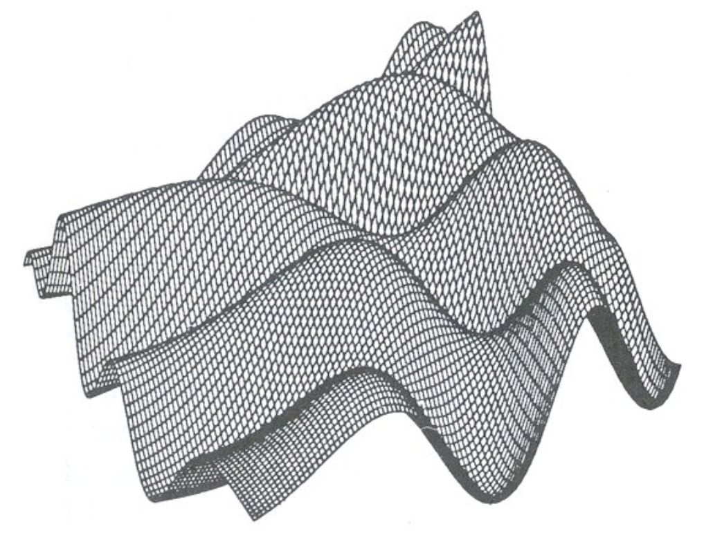
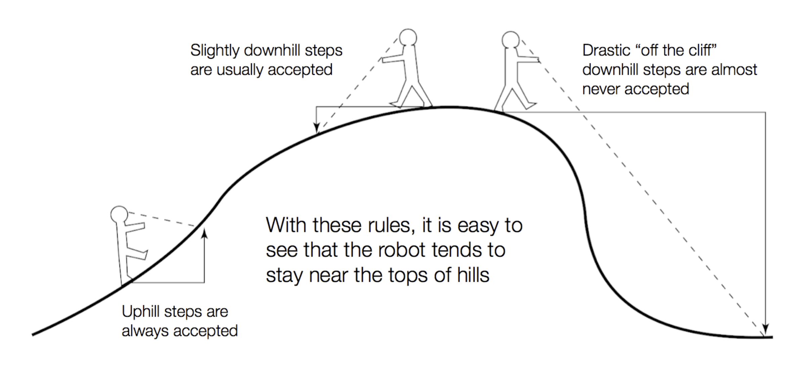
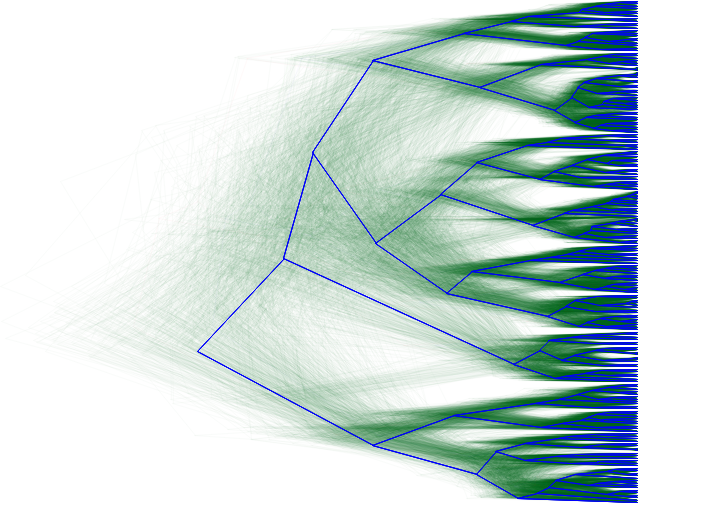

Models for protein evolution
Australasian Structural Phylogenetics Meeting 2023
Remco Bouckaert
The problem
- Given a sequence alignment $D$, what can we say about its evolutionary history
- Tree model $T$ represent evolution through time

How sequences evolve
Instanteneous $20\times20$ rate matrix
| $- $ | $ r_{1,2} $ | $ r_{1,3} $ | $ \ldots $ | $r_{1,20}$ |
| $r_{1,2} $ | $ - $ | $ r_{2,3} $ | $ \ldots $ | $r_{2,20}$ |
| $R =$ | $\ldots $ | $ $ | $ $ | $ $ | $ \ldots$ |
| $\ldots $ | $ $ | $ $ | $ $ | $ \ldots$ |
| $r_{1,20} $ | $ r_{2,20} $ | $ $ | $ \ldots $ | $ - $ |
|
Symmetric, diagonal = -sum of other elements in row
Frequencies $\pi = \{\pi_1,\ldots,\pi_{20}\}$
$Q = R\times \pi$
Transition probabilities: $P(t) = e^{-Qt}$
How sequences evolve

time $t$ -->
$p(x_{j,root}) = \pi_j$
transition probs $p(x_j|x_i,t)$
root frequencies $\pi_j$
-->
Empirical models
Define rate matrix $R$ and frequencies $\pi$
- Blosum62
- CpREV
- DCMut
- Dayhoff
- FLU
- HIVb
- HIVw
- JTT
- LG
- MtArt
- MtREV
- MtMam
- RtREV
- VT
- WAG
- $\ldots$
Frequencies
$p(x_{j,root}) = \pi_j$
- From empirical model
- All equal
- Estimated from alignment, fixed through MCMC
- Estimated during MCMC
Site rate variation
Rates of evolution differs at different sites

Use mixture model to capture this

Gamma site rate heterogeneity
Usually 4 categories
Rates quantiles from discretised gamma distribution $\Gamma(\alpha,1/\alpha)$


Which model to use: rates, frequencies, gamma or not?
Bayesian inference through MCMC


Bayesian inference through MCMC

OBAMA for Bayesian Aminoacid Model Averaging
- Average over empirical rate matrices
- Average over frequency methods
- Average over using gamma site heterogeneity or not
- Average over using proportional invariable or not
No need to worry about model uncertainty. Set and forget...
Other site models
- C20: mixture of 20 rate models
- CAT: pick base freqs per site
- BP: base freqs change at points on branches
- CAT-BP: combined CAT and BP
- PhyloHMM: choose model at root based
- ...
Clock models
...
Tree models
...
Conclusions
- Trees provide useful model for evolutionary history
- OBAMA takes care of site model uncertainty
- Bayesian framework provides opportunities to combine sequence and structural informations